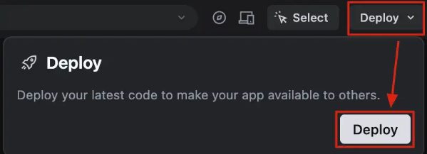

Deployment
Do you need to deploy your app? That depends on who needs to use it.
For a hackathon prototype or proof-of-concept, you probably don't need to deploy. Keep reading to understand when and why.
Your Localhost is Enough (Usually)
When you're building a prototype or proof-of-concept (POC) at an AI hackathon, running your app locally on your own machine is perfectly fine. Here's why:
- It works immediately — No setup time, no waiting for deployment
- It's private — Your code and data stay on your machine
- It's fast — Direct access to your computer's resources
- It's free — No hosting costs or account setup needed
As long as you're coding, testing, and demoing from your own machine, localhost is all you need. Think of it like building something in your garage — you don't need to rent a workshop to tinker.
When Should You Deploy?
Deployment only becomes necessary when you need to share your app with others. Common scenarios:
- Your teammates need to access the app from their own computers
- You want judges or mentors to try your app remotely
- You're doing a live demo and need a shareable link
- Someone outside your local network needs to use your app
Think of deployment like putting your app on the internet so anyone with the link can access it — not just people sitting at your computer.
A Warning About Vercel
You may see Vercel recommended or built into your project setup, but Vercel is NOT ideal for this use case. The primary reason: Vercel suffered a significant security breach in March 2025 that compromised build pipeline credentials and exposed user data. For a hackathon project where you may be using API keys or handling any form of data, this is a serious risk you should not ignore.

Deploying with GitHub Codespaces
If you've decided you need to deploy, GitHub Codespaces is the easiest path for hackathon projects. Here's how to do it in a few simple steps:
Step 1: Push your code to GitHub
You already have a GitHub account linked to the Google account on this computer — you're all set. No need to create a new account or sign up anywhere. Just use the GitHub account you already have when you signed in with Google earlier today.
Click to reveal a prompt for your AI assistant
I need to deploy my project using GitHub Codespaces. I already have a GitHub account. Help me push my code to a new repo, create a codespace, and get a shareable public URL for my backend running on port 3000.Step 2: Create a Codespace
Go to your repo on GitHub, click the "Code" button, then "Create codespace on main".
Step 3: Share your app
Once the codespace loads:
- Open the "Ports" tab in the bottom panel
- Find your running port (usually 3000)
- Right-click and set it to Public
- Copy the forwarded URL — that's your shareable link!
Help me deploy this project using GitHub Codespaces. I need a shareable public URL for my backend running on port 3000. Walk me through the steps to make my port public and get the shareable link.For hackathons, start with localhost. Only deploy if someone specifically needs remote access. GitHub Codespaces is usually the fastest path to a shareable link!